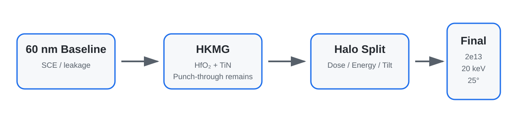

프로젝트 요약
Baseline: 60 nm NMOS에서 SCE/leakage 확인
Diagnosis: HKMG 단독 적용 시 punch-through 지속
Action: Boron Halo Dose/Energy/Tilt split
Selected: 2e13 cm⁻² · 20 keV · 25°
01 · OVERVIEW
High-k만 넣는 것으로 끝내지 않고 junction engineering까지 확장
프로젝트는 HfO₂ 기반 high-k gate stack 도입 효과를 먼저 확인한 뒤, HKMG-only 구조에서 switching 특성이 무너지는 문제를 다시 진단하고 Halo Doping을 추가하는 순서로 진행했습니다. Nitride sidewall spacer는 LDD와 deep Source/Drain 사이의 공정 단계로 구현했습니다.
02 · PROCESS DESIGN
Gate stack + Halo + LDD + Spacer + S/D
High-kHfO₂
Gate electrodeTiN
SpacerNitride
03 · HALO OPTIMIZATION
세 개의 Halo parameter split
| Parameter | Compared values | Selected |
|---|---|---|
| Dose | 1e13 / 2e13 / 5e13 cm⁻² | 2e13 cm⁻² |
| Energy | source slides contain two split-label sets | 20 keV |
| Tilt | 15° / 20° / 25° | 25° |
04 · FINAL RESULT
Leakage suppression과 switching 특성의 균형 조건
Ioff1.465e-15 A/µm
Ion/Ioff1.41e12
SS68–69 mV/dec
HKMG-only case는 발표자료에서 Ion/Ioff = 0.89로 보고되었고, 심한 leakage 때문에 SS를 추출하지 못한 것으로 정리되어 있습니다.
05 · IMPLEMENTATION
Sentaurus source와 extraction logic
06 · ENGINEERING TAKEAWAY
Problem → diagnosis → process modification → re-evaluation
이 프로젝트의 핵심은 특정 공정 기술을 단순히 적용했다는 점보다, HKMG-only 결과에서 새로운 leakage mechanism을 확인하고 그 문제를 Halo junction engineering으로 다시 해결해 간 설계 흐름에 있습니다.